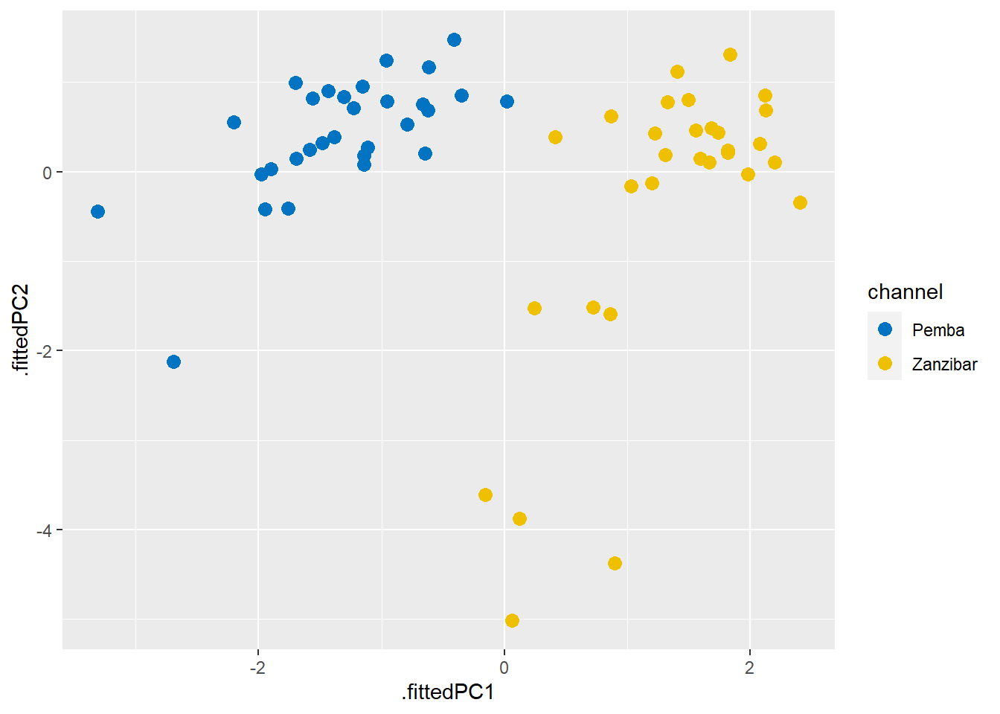
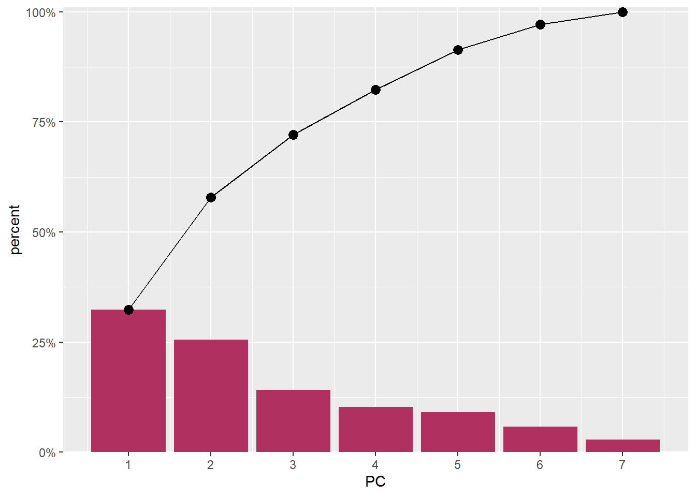

require(tidyverse)
require(kableExtra)
require(factoextra)
require(ggbiplot)In the previous post I illustrated a simple way to do Principal Component Analysis in R. I simply used the output results from prcomp() function of R base. But, I constantly find hard to the untidy output that prcomp generates and wished to get a tidy result. In this post I will illustrate the approaches that I was inspired by Claus Wilke in the post PCA tidyverse style.
I will extend the PCA analysis I explained in the A simple Principal Component Analysis (PCA) in R. If your new in this kind of analysis, I would recommend you to read that post before you proceeed with this post. A simple Principal Component Analysis (PCA) in R will familiarize with the general concept and you can easily follow later once you have a glimpse of PCA and its core function and how is done in R.
I first load the packages I am going to use in this session. I will load several packages highlighted in the chunk below;
Load the dataset
I use a simple and easy to understand dataset. This dataset consists of data on 120 observations sampled in Pemba and Zanzibar channel during the wet and dry season. This dataset has nine variables, two are factor (channel and season variables) and the other seven are numerical variables. I used read_csv to load the data and rearrange the order of variable with select() functions from dplyr package [@dplyr]
data = read_csv("../data/pangani.csv")%>%
select(-c(1:2)) %>%
select(channel = site, season, everything()) I use descr() function from summarytools package [@summarytools] to get descriptive statistics of the numerical variables in the dataset;
data %>%
summarytools::descr()Descriptive Statistics
chl do nitrate pH po4 salinity sst
----------------- -------- -------- --------- -------- -------- ---------- --------
Mean 0.17 5.83 0.60 8.30 0.47 34.80 27.90
Std.Dev 0.31 0.70 0.67 0.46 0.24 0.64 0.59
Min 0.00 4.04 0.11 7.94 0.03 33.00 26.00
Q1 0.00 5.31 0.35 8.03 0.29 34.50 27.50
Median 0.00 5.88 0.47 8.05 0.44 34.95 27.90
Q3 0.17 6.23 0.64 8.50 0.65 35.00 28.20
Max 1.26 7.60 5.29 9.60 1.11 37.00 29.50
MAD 0.00 0.68 0.22 0.06 0.27 0.37 0.44
IQR 0.16 0.91 0.28 0.28 0.35 0.50 0.70
CV 1.82 0.12 1.11 0.06 0.52 0.02 0.02
Skewness 1.83 0.30 5.25 1.20 0.38 -0.16 0.12
SE.Skewness 0.22 0.22 0.22 0.22 0.22 0.22 0.22
Kurtosis 2.13 -0.10 31.34 -0.39 -0.43 1.65 0.29
N.Valid 120.00 120.00 120.00 120.00 120.00 120.00 120.00
Pct.Valid 100.00 100.00 100.00 100.00 100.00 100.00 100.00Compute the Principal Components
PCA prefer numerical data, therefore, we need to trim off the dataset channel and season variables, because they are categorical variables. Once we have removed the categorical variables, we also need to filter variables for a particular season. I will start with the dry season. We use the filter function from dpyr [@dplyr] package to drop all observation collected during the rain season.
## Dry season
dry.season = data %>%
filter(season == "Dry") Our dataset is reduced to seven numerical variables and 60 observation collected during the dry season in Pemba and Zanzibar channel. To compute PCA, we simply parse the arguments data = dry.season and scale = TRUE in prcomp() function, which performs a principal components analysis and assign the output as dry.pca. But before running PCA, I first select numeric variables with select(where(is.numeric)).
## PCA computation
dry.pca = dry.season %>%
select(where(is.numeric)) %>%
prcomp(scale. = TRUE, center = TRUE)Then We can summarize our PCA object with summary().
dry.pca %>%
summary()Importance of components:
PC1 PC2 PC3 PC4 PC5 PC6 PC7
Standard deviation 1.5046 1.3373 0.9955 0.8483 0.7964 0.63574 0.4459
Proportion of Variance 0.3234 0.2555 0.1416 0.1028 0.0906 0.05774 0.0284
Cumulative Proportion 0.3234 0.5789 0.7205 0.8233 0.9139 0.97160 1.0000We get seven principal components, called PC1-9. Each of these explains a percentage of the total variation in the dataset. That is to say: PC1 explains 32% of the total variance, which means that nearly one-thirds of the information in the dataset can be encapsulated by just that one Principal Component. PC2 explains 25% of the variance. So, by knowing the position of a sample in relation to just PC1 and PC2, you can get a very accurate view on where it stands in relation to other samples, as just PC1 and PC2 can explain 57% of the variance.
tidy approach of the result
David Robinson, Alex Hayes and Simon Couch [-@broom] developed a broom package that allows to convert statistical results into tidy tibbles. that is to say the broom package takes the messy output results from models, PCA or t.test, and turns them into tidy tibbles.
broom package attempt to bridge the gap from untidy outputs of predictions and estimations to the tidy data we want to work with. broom is particularly designed to work with Hadley’s dplyr package [@dplyr]. In a nutshell, When we do PCA, Our focus is centered to explore the;
- data in PC coordinates.
- rotation matrix.
- variance explained by each PC.
Data in PC Coordinate
The rotation matrix is stored as dry.pca$rotation, but here we’ll extract it using the tidy() function from broom. When applied to prcomp objects, the tidy() function takes an additional argument matrix, which we set to matrix = "rotation" to extract the rotation matrix.
dry.pca %>%
broom::tidy(matrix = "rotation")# A tibble: 49 x 3
column PC value
<chr> <dbl> <dbl>
1 sst 1 -0.545
2 sst 2 0.123
3 sst 3 -0.0544
4 sst 4 0.316
5 sst 5 0.146
6 sst 6 -0.699
7 sst 7 -0.275
8 pH 1 0.593
9 pH 2 -0.194
10 pH 3 0.0245
# ... with 39 more rowsInstead of viewing the coordinates, you might be interested in the fitted values and residuals for each of the original points in the PCA For this, use augment, which augments the original data with information from the PCA:
dry.pca %>%
broom::augment(dry.season) %>%glimpse()Rows: 60
Columns: 17
$ .rownames <chr> "1", "2", "3", "4", "5", "6", "7", "8", "9", "10", "11", "1~
$ channel <chr> "Pemba", "Pemba", "Pemba", "Pemba", "Pemba", "Pemba", "Pemb~
$ season <chr> "Dry", "Dry", "Dry", "Dry", "Dry", "Dry", "Dry", "Dry", "Dr~
$ sst <dbl> 29.5, 29.3, 28.8, 29.0, 28.6, 28.6, 28.0, 28.0, 28.5, 28.2,~
$ pH <dbl> 8.01, 8.02, 8.01, 8.01, 8.02, 8.00, 8.04, 8.04, 8.01, 8.03,~
$ salinity <dbl> 34.0, 34.8, 34.0, 34.8, 35.0, 34.8, 35.0, 35.5, 34.8, 36.0,~
$ do <dbl> 5.65, 5.06, 5.21, 5.06, 5.40, 5.11, 5.13, 6.06, 5.11, 5.55,~
$ chl <dbl> 0.00163, 0.00182, 0.00190, 0.00134, 0.00134, 0.00146, 0.000~
$ po4 <dbl> 1.0670600, 0.8360900, 0.7899000, 0.7206100, 0.6744100, 0.62~
$ nitrate <dbl> 0.10866, 0.12085, 0.15745, 0.12085, 0.14525, 0.16965, 0.303~
$ .fittedPC1 <dbl> -3.3128016, -2.2025913, -1.8998934, -1.6988577, -1.3060840,~
$ .fittedPC2 <dbl> -0.44077004, 0.55118634, 0.02897391, 0.99291382, 0.83997366~
$ .fittedPC3 <dbl> 0.732658833, 0.331566334, 1.262170852, 0.317429665, -0.0357~
$ .fittedPC4 <dbl> 0.28245839, 0.04114448, 0.27015852, 0.20242301, -0.12900572~
$ .fittedPC5 <dbl> 0.32047482, 1.02972979, 0.39836162, 0.55981611, 0.16040681,~
$ .fittedPC6 <dbl> -0.21252088, -0.71467529, -0.26994931, -0.56760900, -0.4346~
$ .fittedPC7 <dbl> -1.15788428, -0.44056637, -0.11623603, -0.15009189, 0.17792~Now, we want to plot the data in PC coordinates. In general, this means combining the PC coordinates with the original dataset, so we can color points by categorical variables present in the original data but removed for the PCA. We do this with the augment() function from broom, which takes as arguments the fitted model and the original data. The columns containing the fitted coordinates are called .fittedPC1, .fittedPC2, etc. We can plot then;
dry.pca %>%
broom::augment(dry.season) %>%
ggplot(aes(x = .fittedPC1, y = .fittedPC2, col = channel))+
geom_point(size = 3) +
ggsci::scale_color_jco()
Look at the variance explained by each PC
Finally, we’ll plot the variance explained by each PC. We can again extract this information using the tidy() function from broom, now by setting the matrix argument to matrix = "eigenvalues.
dry.pca %>%
broom::tidy(matrix = "eigenvalues")# A tibble: 7 x 4
PC std.dev percent cumulative
<dbl> <dbl> <dbl> <dbl>
1 1 1.50 0.323 0.323
2 2 1.34 0.255 0.579
3 3 0.996 0.142 0.720
4 4 0.848 0.103 0.823
5 5 0.796 0.0906 0.914
6 6 0.636 0.0577 0.972
7 7 0.446 0.0284 1 You notice that we get a tibble format of the values, we can use these values to plot
dry.pca %>%
broom::tidy(matrix = "eigenvalues") %>%
ggplot()+
geom_col(aes(x = PC, y = percent), fill = "maroon") +
geom_line(aes(x = PC, y = cumulative))+
geom_point(aes(x = PC, y = cumulative), size = 3) +
scale_y_continuous(labels = scales::percent_format(), expand = expansion(mult = c(0,0.01)))+
scale_x_continuous(breaks = 1:8)
The first and second component captures 60% of the variation in the data (Figure @ref(fig:fig3)) and, as we can see from the figure @ref(fig:fig2), nicely separates the Pemba channel samples from the Zanzibar channel samples.
Cited materials
This blog is brought to you by https://semba.netlify.app